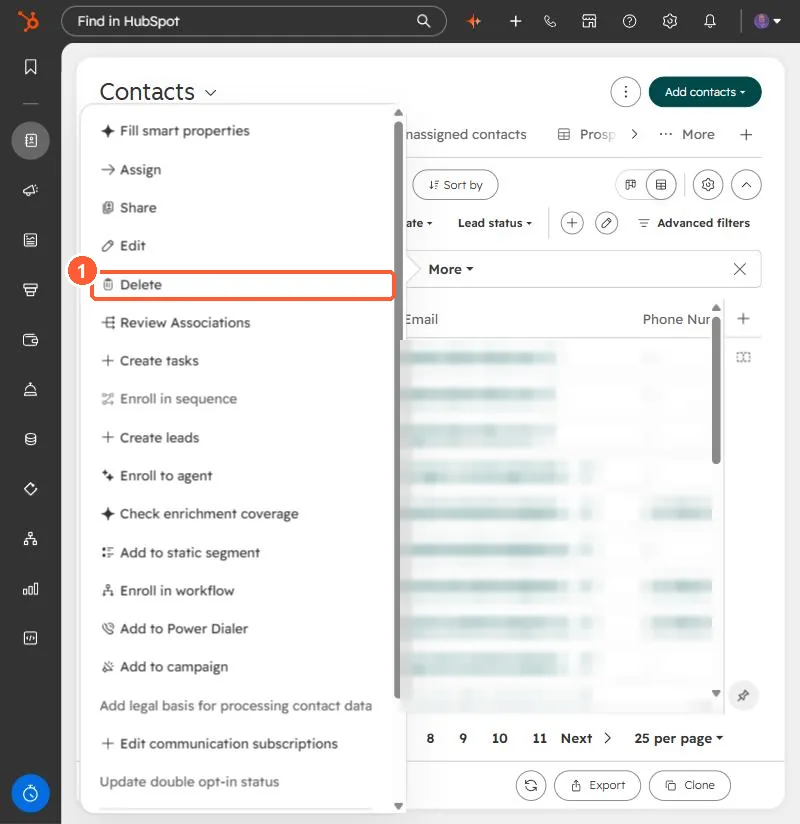

Short answer
HubSpot's KB: contacts who marked your emails as spam are dropped from future emails automatically. To remove them, create a segment of spam reporters for a rolling timeframe, then delete in bulk. Spam reports hurt your sending reputation and can lead to a suspension.
1. In HubSpot
The relevant screen in my demo portal.


2. Worth knowing
Deletion is optional; it mainly keeps your marketing contact count down.
3. Related
Spam checklist and bulk delete.